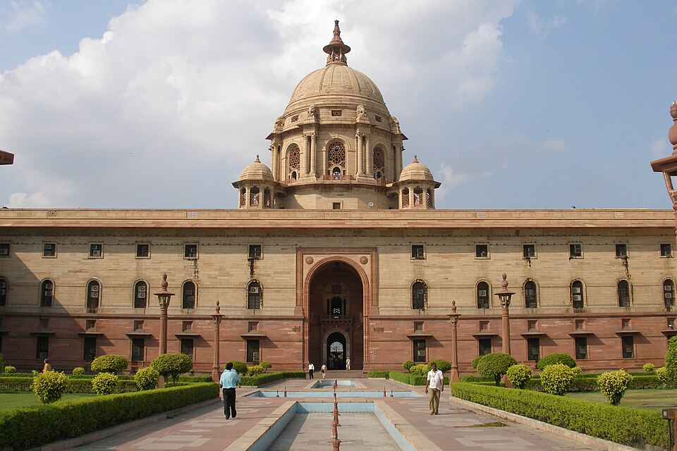
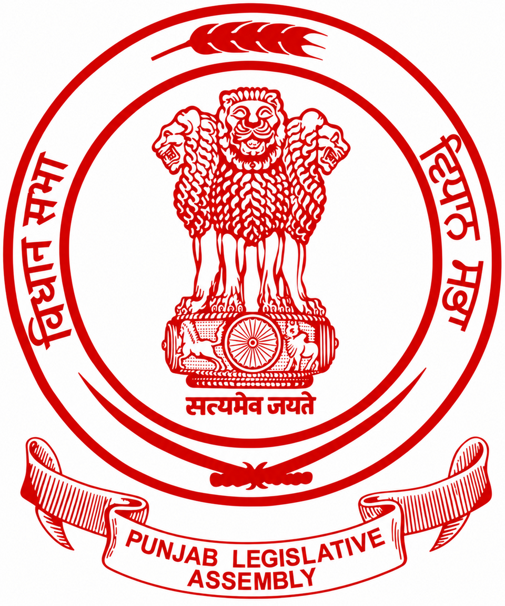
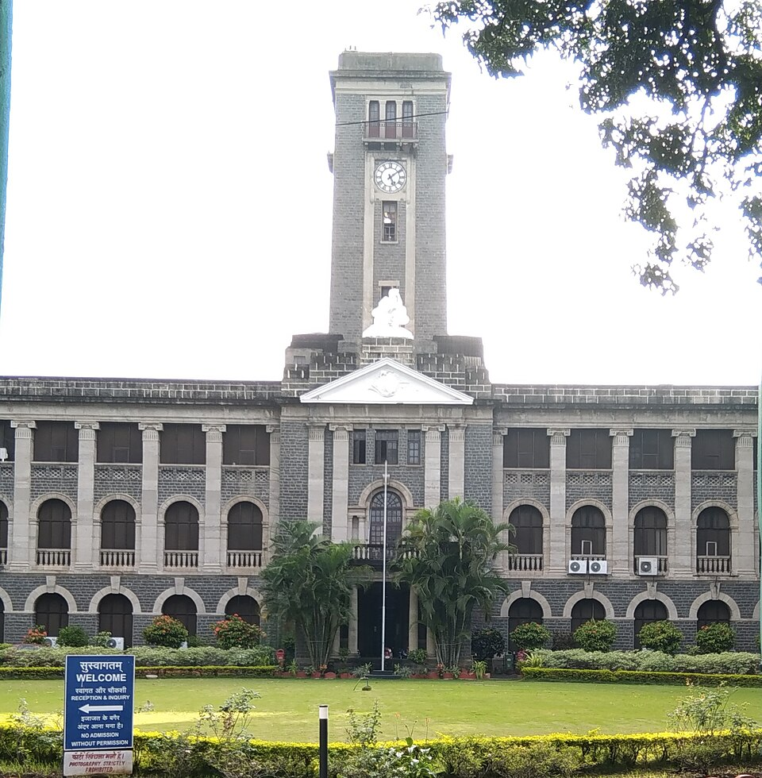
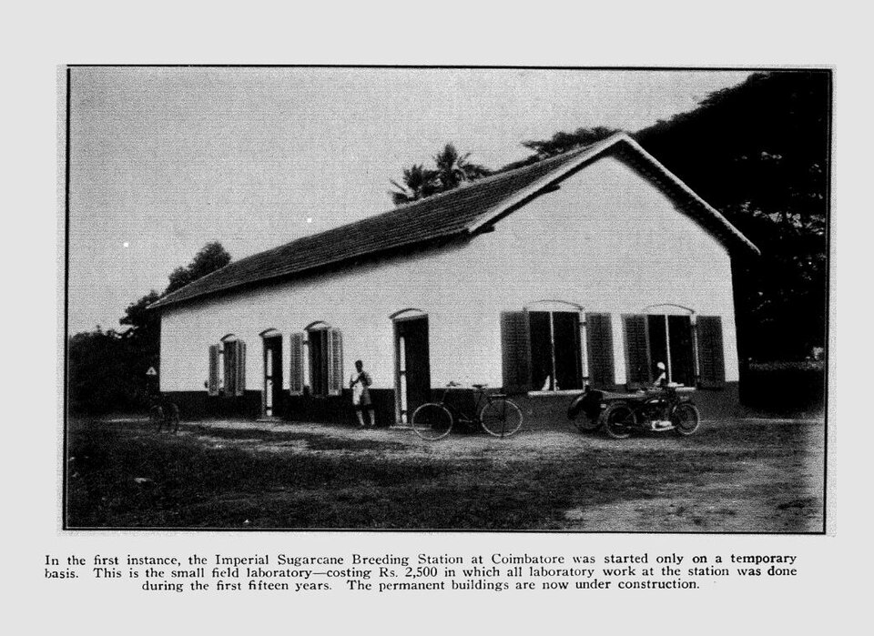
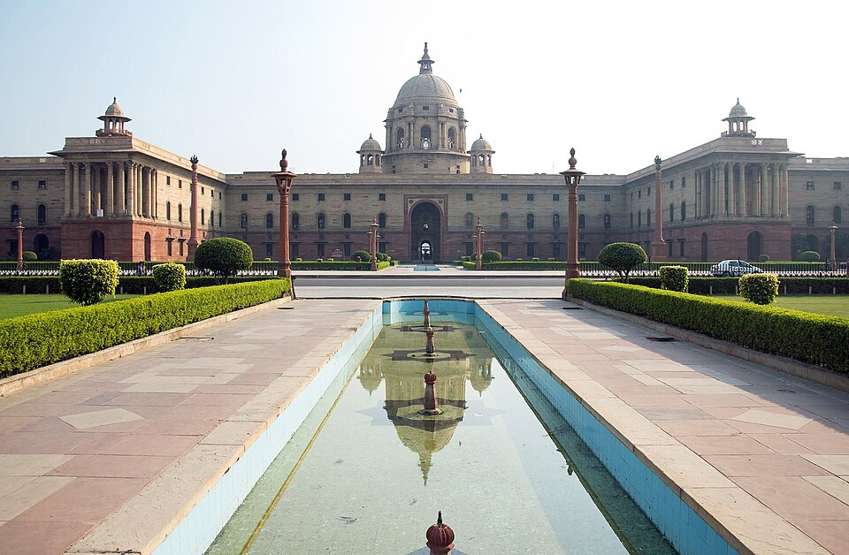

राष्ट्रीय
 राष्ट्रीय
राष्ट्रीयसंविधान दिवस पर भाजपा मनाएगी गौरव दिवस, कांग्रेस निकालेगी रक्षा मार्च
संविधान दिवस के अवसर पर 26 नवंबर को देश भर में विभिन्न राजनीतिक कार्यक्रम आयोजित किए जा रहे हैं। भाजपा गौरव दिवस मनाएगी, वहीं कांग्रेस संविधान रक्षा मार्च निकालेगी।
 राष्ट्रीय
राष्ट्रीययूपी विधानसभा चुनाव 2027: सपा और कांग्रेस के बीच सीट शेयरिंग को लेकर तकरार
उत्तर प्रदेश विधानसभा चुनाव 2027 से पहले समाजवादी पार्टी और कांग्रेस के बीच सीटों के बंटवारे को लेकर खींचतान तेज हो गई है। दोनों दलों के बीच बात बनती नजर नहीं आ रही है।
राष्ट्रीयउत्तर प्रदेश विधानसभा चुनाव 2027: बीजेपी ने तेज की तैयारी, मतदाता सूची पुनरीक्षण पर जोर
उत्तर प्रदेश में 2027 के विधानसभा चुनाव की तैयारियों के तहत बीजेपी ने मतदाता सूची के विशेष पुनरीक्षण अभियान को लेकर समीक्षा बैठक की। सीएम योगी आदित्यनाथ ने कम प्रदर्शन वाले जिलों में सुधार के निर्देश दिए हैं।
 राष्ट्रीय
राष्ट्रीयपश्चिम बंगाल के मंत्री का दावा, ऋतब्रत गुट को सीएम का समर्थन
पश्चिम बंगाल के स्वास्थ्य मंत्री शारद्वत मुखर्जी के एक वायरल वीडियो से राज्य की राजनीति में विवाद शुरू हो गया है। उन्होंने दावा किया है कि बागी ऋतब्रत गुट को मुख्यमंत्री सुवेंदु अधिकारी का समर्थन प्राप्त है।
राष्ट्रीयपंजाब सरकार ने गन्ना किसानों के लिए बढ़ाई कीमत, ₹431 प्रति क्विंटल हुआ भाव
पंजाब सरकार ने पेराई सीजन 2026-27 के लिए गन्ने का न्यूनतम समर्थन मूल्य बढ़ाकर ₹431 प्रति क्विंटल कर दिया है। राज्य सरकार का दावा है कि यह देश में गन्ने का सबसे अधिक भाव है।
राष्ट्रीयसौरव दास ने बीजेपी समर्थक सोशल मीडिया खातों पर पासपोर्ट लीक करने का लगाया आरोप
कॉकटच जनता पार्टी के सह-संयोजक सौरभ दास ने आरोप लगाया है कि बीजेपी से जुड़े सोशल मीडिया खातों ने उनका पासपोर्ट ऑनलाइन लीक कर दिया है। उन्होंने इसके खिलाफ आपराधिक शिकायत दर्ज कराने की बात कही है।
राष्ट्रीयसंसद का शीतकालीन सत्र 15 दिसंबर से पहले हो सकता है शुरू
प्रधानमंत्री नरेंद्र मोदी ने 15 दिसंबर से पहले संसद का शीत सत्र बुलाने के संकेत दिए हैं। सरकार इस दौरान परिसीमन और महिला आरक्षण से जुड़े विधेयक पर कदम बढ़ा सकती है।
राष्ट्रीयकेरल के वायनाड की छह वर्षीय आइसा दुर्लभ जेनेटिक बीमारी से पीड़ित
केरल के वायनाड की रहने वाली छह साल की आइसा 'क्यूटिस लैक्सा' नाम की एक दुर्लभ जेनेटिक बीमारी से पीड़ित हैं, जिसके कारण वह बुज़ुर्ग जैसी दिखती हैं.
राष्ट्रीयउत्तर प्रदेश की राजनीति और मुलायम-अखिलेश के दौर पर क्या बोले आज़म ख़ान
एक साल जेल में रहने के बाद रिहा हुए समाजवादी पार्टी के वरिष्ठ नेता आज़म ख़ान ने एक साक्षात्कार में मुलायम सिंह यादव और अखिलेश यादव की कार्यशैली के फर्क समेत कई राजनीतिक मुद्दों पर अपनी बात रखी है।

राष्ट्रीयदिल्ली को अगले साल मिलेंगे सिरसपुर और हस्तसाल में दो नए अस्पताल
दिल्ली में स्वास्थ्य सेवाओं का विस्तार करते हुए सरकार अगले साल सिरसपुर और हस्तसाल में कुल 1,815 बेड वाले दो नए अस्पताल शुरू करने जा रही है, जिससे मरीजों को बेहतर इलाज की सुविधा मिलेगी।
राष्ट्रीयमोकामा: अनंत सिंह की बेटी की शादी में घुड़दौड़ के दौरान भारी भीड़, 10 किलोमीटर लंबा जाम
बिहार के मोकामा में विधायक अनंत सिंह की बेटी की शादी में घुड़दौड़ देखने पहुंची भारी भीड़ के कारण 10 किलोमीटर लंबा जाम लग गया। सुरक्षा कारणों से प्रतियोगिता का फाइनल राउंड टालना पड़ा।
राष्ट्रीयउत्तर प्रदेश चुनाव: गठबंधन पर सपा को इमरान मसूद की चेतावनी
कांग्रेस सांसद इमरान मसूद ने उत्तर प्रदेश विधानसभा चुनाव 2027 के लिए समाजवादी पार्टी से सम्मानजनक गठबंधन की मांग की है। उन्होंने कहा कि अखिलेश यादव को कांग्रेस को उचित महत्व देना होगा।
राष्ट्रीयगाजियाबाद: 2 करोड़ के इंश्योरेंस के लालच में पत्नी पर परिवार को जहर देने का आरोप
गाजियाबाद के इंदिरापुरम में एक महिला पर 2 करोड़ के बीमा और संपत्ति के लालच में पति, बेटे और भांजे को लेड पॉइजनिंग के जरिए धीमा जहर देकर मारने की साजिश रचने का मामला सामने आया है। पुलिस जांच जारी है।
 राष्ट्रीय
राष्ट्रीयदाऊद इब्राहिम के पूर्व घर को मस्जिद बताने पर बॉम्बे हाईकोर्ट नाराज
बॉम्बे हाईकोर्ट ने गैंगस्टर दाऊद इब्राहिम के मुंबई स्थित पूर्व घर को मस्जिद बताने वाली याचिका पर नाराजगी जताई। कोर्ट ने इमारत गिराने पर रोक 30 नवंबर तक बढ़ाई और नमाज पढ़ने पर रोक लगाई।
राष्ट्रीयझांसी में खाद्य सुरक्षा विभाग का छापा, 'बिसरोली' ब्रांड की 2,151 पानी की बोतलें जब्त
उत्तर प्रदेश के झांसी में खाद्य सुरक्षा विभाग की टीम ने एक पानी की यूनिट पर छापा मारकर 'बिसरोली' ब्रांड की 2,151 बोतलें सीज की हैं। पानी के सैंपल को जांच के लिए प्रयोगशाला भेजा गया है।
राष्ट्रीयसंत को झूठ नहीं बोलना चाहिए: एबीपी शिखर सम्मेलन में अखिलेश यादव का सीएम योगी पर तंज
एबीपी शिखर सम्मेलन में समाजवादी पार्टी प्रमुख अखिलेश यादव ने उत्तर प्रदेश की बीजेपी सरकार पर निशाना साधा। उन्होंने शिक्षा, विकास और अन्य मुद्दों पर सवाल उठाते हुए 2027 के चुनावों में पीडीए गठबंधन की जीत का भरोसा जताया।
 राष्ट्रीय
राष्ट्रीयशुभेंदु अधिकारी का दावा, प्रणव मुखर्जी ने दी थी टीएमसी छोड़कर भाजपा में जाने की सलाह
पश्चिम बंगाल के नेता शुभेंदु अधिकारी ने दावा किया है कि पूर्व राष्ट्रपति प्रणव मुखर्जी ने उन्हें टीएमसी छोड़कर प्रधानमंत्री नरेंद्र मोदी के साथ जुड़ने की सलाह दी थी।
राष्ट्रीयहिमाचल प्रदेश: हाटी समुदाय में दो सगे भाइयों से युवती ने की शादी, सामने आई यह वजह
हिमाचल प्रदेश के हाटी समुदाय की एक युवती ने अपनी मर्जी से दो सगे भाइयों के साथ विवाह किया है। इस परंपरा के पीछे जमीन के बंटवारे को रोकने और पारिवारिक एकता बनाए रखने की व्यावहारिक वजह बताई गई है।
 राष्ट्रीय
राष्ट्रीयमुंबई 26/11 हमला: अजमल कसाब के वकीलों को 16 साल बाद भी नहीं मिली फीस
मुंबई में 26/11 आतंकी हमले के आरोपी अजमल कसाब की ओर से बॉम्बे हाईकोर्ट में पैरवी करने वाले दोनों वकीलों को 16 साल बाद भी फीस नहीं मिली है। वकीलों ने बकाया भुगतान के लिए कानूनी प्राधिकरण से गुहार लगाई है।
राष्ट्रीयदेश में गठबंधन की राजनीति तेज, दो साल में एनडीए में जुड़े चार दल
वर्ष 2024 के बाद से एनडीए का कुनबा बढ़ा है और इसमें चार नए दल शामिल हुए हैं, जिससे कुल दलों की संख्या 39 हो गई है। दूसरी ओर, इंडिया गठबंधन से दो दलों ने दूरी बनाई है।
राष्ट्रीयउत्तराखंड की पंचाचूली चोटी से चंद्रोदय का वीडियो वायरल
डिजिटल कंटेंट क्रिएटर सागर आग्री ने उत्तराखंड की पंचाचूली चोटी से चंद्रोदय का एक सुंदर वीडियो साझा किया है, जो सोशल मीडिया पर चर्चा का विषय बना हुआ है।

राष्ट्रीयपंजाब विधानसभा चुनाव आम आदमी पार्टी के लिए क्यों है अहम?
राजनीतिक विश्लेषकों के अनुसार, 2027 का पंजाब विधानसभा चुनाव आम आदमी पार्टी के राजनीतिक भविष्य और अस्तित्व के लिए बेहद अहम माना जा रहा है।
राष्ट्रीयपुणे कोर्ट के बाहर हत्या के आरोपी पर जानलेवा हमला, धारदार हथियार और फायरिंग
पुणे में शिवाजीनगर कोर्ट के बाहर हत्या के एक आरोपी पर छह लोगों ने धारदार हथियारों से हमला किया और गोली चलाई। गंभीर रूप से घायल पीड़ित को अस्पताल में भर्ती कराया गया है। पुलिस मामले की जांच कर रही है।
राष्ट्रीययूपी चुनाव: सीट शेयरिंग को लेकर कांग्रेस सांसद इमरान मसूद ने सपा पर उठाए सवाल
उत्तर प्रदेश विधानसभा चुनाव 2027 के लिए सीट बंटवारे को लेकर कांग्रेस सांसद इमरान मसूद ने समाजवादी पार्टी के रवैये पर असंतोष जताया है। उन्होंने कहा कि गठबंधन में गरिमा और आपसी सहयोग होना जरूरी है।
 राष्ट्रीय
राष्ट्रीयसुप्रीम कोर्ट से राहुल गांधी को राहत, आय से अधिक संपत्ति मामले में हाईकोर्ट का आदेश रद्द
सुप्रीम कोर्ट ने आय से अधिक संपत्ति के मामले में राहुल गांधी को राहत देते हुए इलाहाबाद हाईकोर्ट का आदेश रद्द कर दिया है। अदालत ने मामले को नए सिरे से विचार के लिए वापस हाईकोर्ट भेज दिया है।
राष्ट्रीयअसम में दो आईपीएस अधिकारियों के बीच मारपीट, डीआईजी और एसएसपी भिड़े
असम के कोकराझार में एक पार्टी के दौरान डीआईजी और एसएसपी के बीच मारपीट हो गई। मुख्यमंत्री हिमंत बिस्वा सरमा ने डीजीपी को मामले को सुलझाने की जिम्मेदारी सौंपी है।
राष्ट्रीययूपी चुनाव 2027: सपा और कांग्रेस के बीच सीट बंटवारे पर फंसा पेंच
उत्तर प्रदेश विधानसभा चुनाव 2027 के लिए सपा और कांग्रेस के बीच सीट शेयरिंग को लेकर हुई बैठक बेनतीजा रही। सपा ने सहारनपुर मंडल में कांग्रेस को केवल एक सीट का प्रस्ताव दिया है।
राष्ट्रीयबिलासपुर के वृद्धाश्रम में 75 साल के कन्हैया और 63 साल की सबीना ने रचाई शादी
हिमाचल प्रदेश के बिलासपुर स्थित वृद्धाश्रम में 75 वर्षीय कन्हैया लाल और 63 वर्षीय सबीना ने पारंपरिक रीति-रिवाजों से विवाह कर जीवन की नई शुरुआत की है।
राष्ट्रीययूपी में सपा और कांग्रेस के बीच सीट बंटवारे पर फंसे पेंच की पांच वजहें
उत्तर प्रदेश विधानसभा चुनाव के लिए समाजवादी पार्टी और कांग्रेस के बीच सीट बंटवारे पर गतिरोध जारी है। सीटों की संख्या, मजबूत सीटों की मांग और राजनीतिक महत्वाकांक्षाओं को लेकर दोनों दलों में मतभेद बने हुए हैं।
राष्ट्रीयमोकामा विधायक अनंत सिंह की बेटी की शादी की भव्य तैयारियां
मोकामा विधायक अनंत सिंह की बेटी की शादी में पांच लाख मेहमानों के आने की संभावना है। इसके लिए विशेष इंतजाम किए गए हैं और दो हेलिपैड भी बनाए जा रहे हैं।
 राष्ट्रीय
राष्ट्रीयउत्तर प्रदेश चुनाव 2027: समाजवादी पार्टी गुरुवार को जारी करेगी जन-मन घोषणा पत्र
उत्तर प्रदेश विधानसभा चुनाव 2027 के मद्देनजर समाजवादी पार्टी संविधान दिवस पर अपना 'जन-मन घोषणा पत्र' जारी करेगी। पार्टी का मुख्य फोकस 'पीडीए' और महिलाओं को सालाना ₹40,000 की आर्थिक मदद देने पर है।
 राष्ट्रीय
राष्ट्रीयगोवा चुनाव 2027: कांग्रेस ने विपक्षी दलों से गठबंधन और उम्मीदवारों के चयन पर बढ़ाई रफ्तार
गोवा विधानसभा चुनाव 2027 की तैयारियों के तहत कांग्रेस ने जीएफपी और आरजीपी के साथ गठबंधन की बातचीत तेज कर दी है। दिल्ली में हुई बैठक में उम्मीदवारों के जल्द चयन और भाजपा सरकार के खिलाफ साझा अभियान चलाने पर चर्चा हुई।
 राष्ट्रीय
राष्ट्रीयसौराभ दास के विदेश जाने पर रोक के खिलाफ दिल्ली हाई कोर्ट में याचिका
सिटीजंस फॉर जस्टिस एंड पीस के सौराभ दास ने पासपोर्ट में विसंगति के आधार पर विदेश यात्रा रोकने के फैसले को दिल्ली हाई कोर्ट में चुनौती दी है। मामले पर गुरुवार को सुनवाई होगी।
राष्ट्रीयमेरठ के होटल में युवती को बंधक बनाकर पीटा, आरोपी फरार
मेरठ के आबूलेन स्थित एक होटल में 24 वर्षीय युवती को चाकू के बल पर बंधक बनाने का मामला सामने आया है। सड़क पर भागी युवती के साथ आरोपी ने मारपीट की, जिसके बाद वह फरार हो गया। पुलिस मामले की जांच कर रही है।
राष्ट्रीयबागपत के स्कूल में वेतन घोटाला, बिना स्कूल आए वेतन लेते रहे दो शिक्षक
बागपत के एक इंटर कॉलेज में बिना स्कूल आए सरकारी वेतन लेने का मामला सामने आया है। एक शिक्षक 14 साल और शिक्षिका सात साल से अनुपस्थित थे। शिकायत के बाद जांच में पुष्टि होने पर दोनों को निलंबित कर दिया गया है।
राष्ट्रीयकांग्रेस गठबंधन के बीच शायराना अंदाज में इमरान प्रतापगढ़ी की नसीहत
कांग्रेस और समाजवादी पार्टी के बीच गठबंधन की चर्चाओं के बीच पार्टी नेताओं में शायरी के जरिए बयानबाजी शुरू हो गई है। इमरान प्रतापगढ़ी ने बेवजह की बातों से बचने की सलाह दी है।
 राष्ट्रीय
राष्ट्रीयलद्दाख स्वायत्त पहाड़ी विकास परिषद चुनाव में ईवीएम की जगह इस्तेमाल होंगे मतपत्र
लद्दाख में 4 दिसंबर को होने वाले स्वायत्त पहाड़ी विकास परिषद (LAHDC) के चुनाव इलेक्ट्रॉनिक वोटिंग मशीन की जगह पारंपरिक मतपत्रों से कराए जाएंगे।
राष्ट्रीयविदेशों में बैठे गैंगस्टर भारतीय जेलों के जरिए चला रहे हैं आपराधिक नेटवर्क
एनआईए ने खुलासा किया है कि विदेशों में छिपे गैंगस्टर भारतीय जेलों में बंद कैदियों के जरिए हत्या और उगाही का नेटवर्क चला रहे हैं। जेलों में मोबाइल की पहुंच और कर्मचारियों की भूमिका बड़ी चुनौती बनी हुई है।
राष्ट्रीयकेंद्रीय कैबिनेट ने देश में निर्माण उपकरणों और बुनियादी ढांचे के लिए दी मंजूरी
केंद्रीय कैबिनेट ने देश में निर्माण उपकरणों के उत्पादन, कामराजार पोर्ट पर कंटेनर टर्मिनल और सिलचर में नया एयरपोर्ट बनाने के लिए हजारों करोड़ रुपये की योजनाओं को मंजूरी दी है।
राष्ट्रीयकेंद्रीय कैबिनेट की बैठक आज, संसद के शीतकालीन सत्र के एजेंडे पर होगी चर्चा
प्रधानमंत्री नरेंद्र मोदी की अध्यक्षता में आज केंद्रीय कैबिनेट की बैठक होगी। इसमें संसद के आगामी शीतकालीन सत्र में पेश होने वाले विधेयकों और सरकारी नीतियों की रणनीति पर चर्चा की संभावना है।
राष्ट्रीयउत्तर प्रदेश चुनाव: समाजवादी पार्टी के साथ सीट शेयरिंग पर 120 सीटों पर अड़ी कांग्रेस
उत्तर प्रदेश विधानसभा चुनाव के लिए समाजवादी पार्टी और कांग्रेस के बीच सीट बंटवारे को लेकर बातचीत जारी है। सूत्रों के मुताबिक, कांग्रेस पार्टी 120 सीटों की मांग पर अड़ी हुई है।
राष्ट्रीयकेरल: सोशल मीडिया पर विज्ञापन वाली फेयरनेस क्रीम से लड़की की किडनी खराब
केरल में सोशल मीडिया पर विज्ञापन देखकर खरीदी गई फेयरनेस क्रीम के इस्तेमाल से 17 साल की एक लड़की को गंभीर किडनी की बीमारी हो गई। लैब जांच में क्रीम में तय सीमा से बहुत ज्यादा पारा (मरकरी) पाया गया है।
 राष्ट्रीय
राष्ट्रीयकार्तिक पूर्णिमा: उत्तर प्रदेश के तीर्थस्थलों पर 30 लाख श्रद्धालुओं ने किया स्नान
कार्तिक पूर्णिमा पर उत्तर प्रदेश के प्रमुख तीर्थस्थलों पर करीब 30 लाख श्रद्धालुओं ने गंगा और सरयू में स्नान किया। अकेले प्रयागराज में 10 लाख लोग पहुंचे, जबकि काशी के घाटों पर दीपोत्सव मनाया गया।
राष्ट्रीयतनीषा मुखर्जी ने नितेश तिवारी की रामायण पर दी प्रतिक्रिया, साई पल्लवी को बताया गलत चयन
अभिनेत्री तनीषा मुखर्जी ने नितेश तिवारी की फिल्म रामायण की समीक्षा की है। उन्होंने रणबीर कपूर और यश के अभिनय की तारीफ की, लेकिन सीता की भूमिका के लिए साई पल्लवी के चयन को लेकर असहमति जताई।
राष्ट्रीयबाबा रामदेव और धीरेंद्र कृष्ण शास्त्री के बीच बयानों को लेकर उपजा विवाद
योगगुरु बाबा रामदेव और बागेश्वर धाम के पीठाधीश्वर धीरेंद्र कृष्ण शास्त्री के बयानों को लेकर संतों के बीच जुबानी जंग शुरू हो गई है, हालांकि दोनों पक्षों ने बाद में स्पष्टीकरण दिया है।
राष्ट्रीयबिना दाने की लगातार खुजली हो सकती है लिवर की समस्या का संकेत
बिना किसी दाने के लगातार होने वाली खुजली को नजरअंदाज करना खतरनाक हो सकता है। डॉक्टरों के अनुसार यह लिवर में पित्त का प्रवाह धीमा होने का लक्षण हो सकता है।
 राष्ट्रीय
राष्ट्रीयऑपरेशन सिंदूर के दौरान तीन चीनी सैटेलाइट्स ने की थी भारत के पश्चिमी तट की निगरानी
भारतीय अंतरिक्ष निगरानी कंपनी डिगंतारा की रिपोर्ट के अनुसार, मई 2025 में 'ऑपरेशन सिंदूर' के दौरान तीन चीनी सैटेलाइट्स ने भुज, जामनगर और महत्वपूर्ण औद्योगिक क्षेत्रों की गतिविधियों पर नजर रखी थी।

राष्ट्रीयराजस्थान और मध्य प्रदेश में शीतलहर का अलर्ट, कई इलाकों में पारा 10 डिग्री से नीचे
पहाड़ी राज्यों में बर्फबारी के बाद राजस्थान और मध्य प्रदेश में शीतलहर का अलर्ट जारी किया गया है। मैदानी इलाकों में तापमान में लगातार गिरावट दर्ज की जा रही है, जबकि दिल्ली की हवा लगातार 10वें दिन खराब श्रेणी में बनी हुई है।

राष्ट्रीयआईसीएमआर सर्वेक्षण: देश के दो तिहाई किशोरों में विटामिन बी12 की कमी
आईसीएमआर और राष्ट्रीय पोषण संस्थान के सर्वेक्षण में देश के किशोरों और वयस्कों में विटामिन बी12 की कमी व्यापक स्तर पर पाई गई है।
राष्ट्रीयमहिला के साथ डांस का वीडियो वायरल होने पर दिल्ली पुलिस इंस्पेक्टर लाइन हाजिर
दिल्ली पुलिस के एक इंस्पेक्टर का महिला के साथ डांस करते हुए वीडियो सोशल मीडिया पर वायरल होने के बाद उन्हें लाइन हाजिर कर दिया गया है। विभाग इस मामले की जांच कर रहा है।
राष्ट्रीययूपी विधानसभा चुनाव: सपा ने जारी की पांच उम्मीदवारों की पहली सूची
उत्तर प्रदेश विधानसभा चुनाव के लिए समाजवादी पार्टी ने बातचीत के बीच पांच उम्मीदवारों की पहली सूची जारी की है। इसे कांग्रेस पर सीट बंटवारे को लेकर दबाव बढ़ाने की रणनीति माना जा रहा है।
 राष्ट्रीय
राष्ट्रीययमुना एक्सप्रेसवे पर घने कोहरे को देखते हुए घटाई गई वाहनों की गति सीमा
सर्दियों में कोहरे के कारण सड़क हादसों को रोकने के लिए यमुना एक्सप्रेसवे पर अधिकतम गति सीमा 100 किलोमीटर प्रति घंटे से घटाकर 75 किलोमीटर प्रति घंटा कर दी गई है।
राष्ट्रीयवाराणसी में देव दीपावली पर सजे 84 घाट, 11 लाख दीपों से जगमगाया गंगा तट
कार्तिक पूर्णिमा पर वाराणसी में देव दीपावली का भव्य आयोजन किया गया। शहर के 84 घाटों पर 11 लाख से अधिक दीये जलाए गए, जिसे देखने देश-विदेश से लाखों श्रद्धालु पहुंचे।
राष्ट्रीययूपी विधानसभा चुनाव 2027: समाजवादी पार्टी ने जारी की पांच उम्मीदवारों की पहली सूची
उत्तर प्रदेश विधानसभा चुनाव 2027 के लिए समाजवादी पार्टी ने पांच उम्मीदवारों की पहली सूची जारी कर दी है. इस सूची में उन सीटों पर भी प्रत्याशी घोषित किए गए हैं, जिन पर कांग्रेस पार्टी अपनी दावेदारी जता रही थी.
राष्ट्रीयकेंद्र सरकार ने दलाई लामा को लुटियंस जोन में आवंटित किया सरकारी बंगला
केंद्र सरकार ने तिब्बती आध्यात्मिक गुरु दलाई लामा को नई दिल्ली के लुटियंस इलाके में पंडित रविशंकर शुक्ल लेन पर टाइप-7 सरकारी बंगला आवंटित किया है।
राष्ट्रीयपूर्वी दिल्ली के प्रीत विहार में युवती से सामूहिक दुष्कर्म, तीन गिरफ्तार
दिल्ली के प्रीत विहार इलाके में एक कैफे में 22 वर्षीय युवती के साथ सामूहिक दुष्कर्म का मामला सामने आया है। पुलिस ने इस सिलसिले में तीन लोगों को गिरफ्तार किया है, जबकि तीन अन्य आरोपी अभी फरार हैं।
राष्ट्रीयउत्तर प्रदेश विधानसभा चुनाव के लिए समाजवादी पार्टी ने जारी की पहली सूची
समाजवादी पार्टी ने उत्तर प्रदेश विधानसभा चुनाव के लिए पांच उम्मीदवारों की अपनी पहली सूची जारी कर दी है। इस सूची में मौजूदा विधायकों को भी टिकट दिया गया है।
राष्ट्रीयमदुरै पहाड़ी पर दीपथून दीप जलाने को लेकर विवाद, सुप्रीम कोर्ट के आदेश पर टकटकी
तमिलनाडु के मदुरै में कार्तिगई दीपम के दौरान थिरुपरनकुंद्रम पहाड़ी पर दीपथून पर दीप जलाने को लेकर विवाद खड़ा हो गया है। सुप्रीम कोर्ट की अनुमति के बाद भी दीप न जलाए जाने पर हिंदू संगठनों ने आपत्ति जताई है।
राष्ट्रीयपंजाब के लुधियाना ज़िले में स्थित है 'इराक़' नाम का यह अनोखा गांव
पंजाब के लुधियाना ज़िले में बसा 'इराक़' नाम का गांव अपने अनूठे नाम और पीढ़ियों से चली आ रही लोक-कथा के कारण अक्सर लोगों का ध्यान आकर्षित करता है।
राष्ट्रीयतमिलनाडु: सुप्रीम कोर्ट के आदेश के बावजूद पहाड़ी पर नहीं जला दीपक, प्रदर्शन
तमिलनाडु के तिरुपरनकुंद्रम पहाड़ी पर कार्तिगई दीपम के मौके पर सुप्रीम कोर्ट के आदेश के बाद भी चोटी पर दीपक नहीं जलाए जाने पर हिंदू संगठनों ने विरोध प्रदर्शन किया। पुलिस ने 50 से अधिक लोगों को हिरासत में लिया।
राष्ट्रीयपंजाब चुनाव: शिरोमणि अकाली दल और बीजेपी ने मिलाया हाथ, एनडीए में वापसी
शिरोमणि अकाली दल और बीजेपी ने आगामी पंजाब विधानसभा चुनाव मिलकर लड़ने का ऐलान किया है। करीब छह साल बाद अकाली दल की एनडीए में वापसी हुई है।
राष्ट्रीयईंधन कम होने के कारण गोवा-मुंबई फ्लाइट को सूरत में उतारा गया
गोवा से मुंबई जा रही एयर इंडिया एक्सप्रेस की एक उड़ान को ईंधन की कमी के चलते सूरत की ओर मोड़ना पड़ा। विमान में 142 यात्री सवार थे और सभी सुरक्षित हैं। अभिनेता अनुपम खेर भी इसी फ्लाइट में थे।
राष्ट्रीयअमृतसर में पुरानी रंजिश के चलते फायरिंग, बुजुर्ग महिला की मौत और युवक घायल
पंजाब के अमृतसर में पुरानी रंजिश के कारण बाइक सवार हमलावरों ने फायरिंग की। गोली एक युवक को लगते हुए पीछे खड़ी बुजुर्ग महिला को जा लगी, जिससे उनकी मौके पर ही मौत हो गई।
राष्ट्रीयरामदेव और धीरेंद्र शास्त्री के बीच राम-कृष्ण विवाद पर सुलह, बातचीत का दावा
योग गुरु रामदेव और बागेश्वर धाम के प्रमुख धीरेंद्र कृष्ण शास्त्री ने राम और कृष्ण की तुलना से जुड़े विवाद को बातचीत के बाद सुलझा लिया है।
राष्ट्रीयरामदेव ने दी सफाई, कहा- धीरेंद्र शास्त्री मेरे बच्चे जैसे, डांट को प्यार से स्वीकारा
योगगुरु रामदेव ने धीरेंद्र शास्त्री पर दिए अपने बयान पर सफाई दी है। उन्होंने कहा कि बागेश्वर बाबा उनके छोटे भाई जैसे हैं और उनकी डांट को उन्होंने बड़प्पन दिखाते हुए स्वीकार किया है।
राष्ट्रीयफिल्म 'हनुमान अंश' के मुख्य अभिनेता शोभिनव सत्य को मिली थी मात्र एक लाख रुपये फीस
कम बजट में बनकर करीब 451 करोड़ रुपये की कमाई करने वाली फिल्म 'हनुमान अंश' के लीड एक्टर शोभिनव सत्य ने खुलासा किया है कि उन्हें फिल्म के लिए सिर्फ एक लाख रुपये फीस मिली थी।
राष्ट्रीयमुंबई मॉल मारपीट मामले में किरीट सोमैया के आरोपों पर मदरसे का जवाब
मुंबई के फीनिक्स मॉल गार्डन में कपल के साथ मारपीट की घटना के बाद बीजेपी नेता किरीट सोमैया ने पास के मदरसे पर आरोप लगाए थे, जिसे प्रिंसिपल ने खारिज किया है।
राष्ट्रीयभारत में सीजेपी आंदोलन की वर्तमान स्थिति और राजनीतिक प्रभाव
मई 2026 में शुरू हुआ सीजेपी आंदोलन शिक्षा मंत्री के इस्तीफ़े के बाद अब ठंडा पड़ता नज़र आ रहा है। राजनीतिक विश्लेषक इसे एक व्यापक वैचारिक कार्यक्रम के अभाव और रणनीतिक कमियों से जोड़कर देख रहे हैं।
 राष्ट्रीय
राष्ट्रीयभारतीय सेना ने सुरक्षा चिंताओं के चलते फेसबुक और स्नैपचैट समेत 87 मोबाइल ऐप्स पर लगाई रोक
भारतीय सेना ने डेटा सुरक्षा और संवेदनशील जानकारी के संभावित दुरुपयोग की चिंताओं के बीच अपने कर्मियों के लिए 87 मोबाइल एप्लिकेशन के इस्तेमाल पर प्रतिबंध लगा दिया है।
राष्ट्रीयराजीव गांधी की सुरक्षा जानबूझकर हटाई गई थी, ताकि उनकी हत्या हो सके: राहुल गांधी
एक नए वीडियो में राहुल गांधी ने दावा किया है कि पूर्व प्रधानमंत्री राजीव गांधी की सुरक्षा जानबूझकर हटाई गई थी। सोनिया गांधी और प्रियंका गांधी ने भी इस दौरान अपनी पुरानी यादें साझा कीं।
राष्ट्रीयबेंगलुरु में शादी से इनकार करने पर युवती की हत्या, आरोपी प्रेमी गिरफ्तार
बेंगलुरु के एक लॉज में शादी की बात को लेकर हुए विवाद के बाद एक युवक ने कथित तौर पर अपनी प्रेमिका को तीसरी मंजिल की खिड़की से नीचे धक्का दे दिया, जिससे उसकी मौत हो गई। पुलिस ने आरोपी को गिरफ्तार कर लिया है।
राष्ट्रीयपंजाब विधानसभा चुनाव: बीजेपी और शिअद ने छह साल बाद की पुरानी गठबंधन की वापसी
पंजाब विधानसभा चुनाव से पहले बीजेपी और शिरोमणि अकाली दल ने अपने गठबंधन का ऐलान कर दिया है। कृषि कानूनों के विरोध में अकाली दल ने छह साल पहले नाता तोड़ लिया था।
राष्ट्रीयबिहार के लखीसराय में ट्रक और कार की टक्कर, पांच लोगों की मौत
बिहार के लखीसराय जिले में एक भीषण सड़क हादसे में पांच लोगों की मौत हो गई और चार अन्य घायल हो गए। घायलों को अस्पताल में भर्ती कराया गया है।
 राष्ट्रीय
राष्ट्रीयपंजाब विधानसभा चुनाव 2027 से पहले अकाली दल और बीजेपी में हुआ गठबंधन
पंजाब विधानसभा चुनाव 2027 से पहले बीजेपी और शिरोमणि अकाली दल ने छह साल पुराने अलगाव को खत्म करते हुए मंगलवार को नए राजनीतिक गठबंधन का ऐलान किया है।
 राष्ट्रीय
राष्ट्रीयलखनऊ में प्रकाश पर्व पर आयोजित कार्यक्रम में शामिल हुए सीएम योगी
श्री गुरु नानक देव जी के 557वें प्रकाश पर्व पर लखनऊ के डीएवी पीजी कॉलेज में विशेष कार्यक्रम आयोजित हुआ, जिसमें मुख्यमंत्री योगी आदित्यनाथ ने हिस्सा लिया और उनके संदेशों को याद किया।
राष्ट्रीयनोएडा के जेवर में शादी वाले घर में सिलिंडर फटने से पिता-पुत्र की मौत
नोएडा के जेवर क्षेत्र के दयानतपुर गांव में सोमवार शाम एलपीजी सिलिंडर फटने से शादी की तैयारियों में जुटे परिवार के दो सदस्यों की मौत हो गई, जबकि दो अन्य झुलस गए।
राष्ट्रीयसमाजवादी पार्टी प्रमुख अखिलेश यादव का फेसबुक पेज बहाल, मेटा को दिया धन्यवाद
समाजवादी पार्टी के अध्यक्ष अखिलेश यादव का आधिकारिक फेसबुक पेज बहाल कर दिया गया है। पार्टी ने इसके लिए मेटा का आभार जताया है। इस पेज पर 90 लाख से अधिक फॉलोअर्स हैं।
राष्ट्रीयपुणे में प्रेम विवाद के बाद सॉफ्टवेयर इंजीनियर ने की प्रेमिका की हत्या
पुणे के हिंजवड़ी इलाके में प्रेम संबंधों के विवाद के बाद एक सॉफ्टवेयर इंजीनियर ने कथित तौर पर अपनी प्रेमिका की पीट-पीटकर हत्या कर दी। वारदात के बाद आरोपी ने खुद पुलिस को फोन किया।
 राष्ट्रीय
राष्ट्रीययूपी चुनाव: सपा और कांग्रेस के बीच सीट बंटवारे पर दूसरे दौर की बैठक शुरू
उत्तर प्रदेश विधानसभा चुनाव के लिए समाजवादी पार्टी और कांग्रेस के बीच सीट बंटवारे को लेकर दिल्ली में दूसरे दौर की बैठक शुरू हो गई है। दोनों दल जीतने की संभावना को आधार मानकर चर्चा कर रहे हैं।
राष्ट्रीयएकनाथ शिंदे की शिवसेना 2027 के उत्तर प्रदेश चुनाव में एनडीए के तहत उतरेगी
महाराष्ट्र के उपमुख्यमंत्री एकनाथ शिंदे के नेतृत्व वाली शिवसेना 2027 के उत्तर प्रदेश विधानसभा चुनाव में एनडीए के साथ मिलकर लगभग 30 सीटों पर चुनाव लड़ने की तैयारी कर रही है।
राष्ट्रीयसौरव दास को लंदन जाने से रोका गया, पासपोर्ट अधिनियम के प्रावधानों पर उठे सवाल
कॉकरोच जनता पार्टी के नेता सौरव दास ने ऑक्सफ़र्ड यूनियन के कार्यक्रम में शामिल होने के लिए लंदन जाते समय दिल्ली एयरपोर्ट पर रोके जाने का दावा किया है।
 राष्ट्रीय
राष्ट्रीयअमित शाह और सुखबीर बादल आज करेंगे साझा प्रेस कॉन्फ्रेंस, क्या टूटेगा गठबंधन?
केंद्रीय गृह मंत्री अमित शाह और शिरोमणि अकाली दल के अध्यक्ष सुखबीर सिंह बादल आज दोपहर बीजेपी मुख्यालय में एक साझा प्रेस कॉन्फ्रेंस को संबोधित करेंगे।
 राष्ट्रीय
राष्ट्रीयमदुरै पहाड़ी पर कार्तिगई दीपम उत्सव आज, सुरक्षा के लिए 5600 से अधिक पुलिसकर्मी तैनात
तमिलनाडु के मदुरै स्थित तिरुपरंकुंद्रम पहाड़ी पर आज कार्तिगई दीपम उत्सव के तहत दीप जलाया जाएगा। तनाव की आशंका के बीच सुरक्षा के कड़े इंतजाम किए गए हैं और पहाड़ी पर 5,600 से अधिक पुलिसकर्मी तैनात हैं।
राष्ट्रीयपश्चिम बंगाल में बेरोजगार युवाओं को मिलेंगे दो हजार रुपये, दिलीप घोष का बयान
पश्चिम बंगाल में पढ़े-लिखे बेरोजगार युवाओं को दो हजार रुपये की वित्तीय सहायता दिए जाने की योजना है। इस बीच, भाजपा नेता दिलीप घोष ने गोहत्या और कथित धर्मनिरपेक्षता के मुद्दों पर अपनी बात रखी है।
राष्ट्रीयमोकामा: अनंत सिंह के घर बेटी की शादी की तैयारियां तेज, कल होगा आयोजन
बिहार के मोकामा में पूर्व विधायक अनंत सिंह की बेटी की शादी की तैयारियां जोरों पर हैं। कल होने वाले इस आयोजन के लिए सभी इंतजामों का जायजा खुद अनंत सिंह ले रहे हैं।
राष्ट्रीयइस हफ्ते ओटीटी पर रिलीज होंगी पांच नई फिल्में और वेब सीरीज
नवंबर के आखिरी हफ्ते में दर्शकों के लिए मनोरंजन का नया दौर शुरू होने जा रहा है। इस दौरान पांच फिल्में और सीरीज ओटीटी पर रिलीज होने के लिए तैयार हैं।
राष्ट्रीयआगरा-लखनऊ एक्सप्रेसवे पर बस को ट्रक ने मारी टक्कर, चार बच्चों की मौत
उत्तर प्रदेश के कन्नौज जिले में आगरा-लखनऊ एक्सप्रेसवे पर एक तेज रफ्तार ट्रक ने खड़ी स्कूली बस को टक्कर मार दी। इस हादसे में चार बच्चों की मौत हो गई और करीब 35 अन्य घायल हो गए।
राष्ट्रीयपटना: मोकामा विधायक अनंत सिंह की बेटी की शादी की भव्य तैयारियां, चार लाख मेहमानों के लिए भोज
मोकामा से विधायक अनंत सिंह की बेटी की शादी पटना के नदावां गांव में हो रही है। आयोजन में चार लाख से अधिक मेहमानों के शामिल होने की संभावना है, जिसके लिए व्यापक तैयारियां की गई हैं।
राष्ट्रीयउत्तर प्रदेश विधानसभा चुनाव 2027: सीट शेयरिंग को लेकर सियासी दलों में खींचतान
यूपी विधानसभा चुनाव 2027 से पहले सीट बंटवारे को लेकर सुगबुगाहट तेज हो गई है। कांग्रेस ने आजमगढ़ की निजामाबाद सीट पर दावा ठोका है, वहीं एनडीए में भी कुछ सीटों को लेकर मतभेद की खबरें सामने आ रही हैं।
राष्ट्रीयउत्तर प्रदेश चुनाव 2027: सपा और कांग्रेस के बीच गठबंधन पर सहमति, सीट बंटवारे पर फंसा पेंच
उत्तर प्रदेश विधानसभा चुनाव 2027 के लिए समाजवादी पार्टी और कांग्रेस के बीच गठबंधन तय हो गया है, लेकिन सीटों के बंटवारे पर चर्चा अभी जारी है। कांग्रेस ने अपनी मांग घटाई है, जबकि सपा जीतने की क्षमता पर जोर दे रही है।
राष्ट्रीयकॉकरोच जनता पार्टी के नेता सौरव दास को दिल्ली एयरपोर्ट पर यूके जाने से रोका
कॉकरोच जनता पार्टी के नेता सौरव दास ने आरोप लगाया है कि उन्हें ऑक्सफोर्ड यूनियन में लेक्चर देने के लिए यूके जाने से दिल्ली एयरपोर्ट पर रोक दिया गया।
राष्ट्रीयशाहरुख खान की फिल्म 'किंग' का नया गाना 'डैडी कूल' 25 नवंबर को हो सकता है लॉन्च
शाहरुख खान और करीना कपूर की फिल्म 'किंग' का नया गाना 'डैडी कूल' 25 नवंबर को रिलीज हो सकता है। इस गाने में दोनों करीब 15 साल बाद साथ नजर आएंगे।
राष्ट्रीयउत्तर प्रदेश विधानसभा चुनाव: बीजेपी ने बढ़ाई चुनावी सरगर्मी, सीट-बंटवारे पर चर्चा तेज
उत्तर प्रदेश विधानसभा चुनाव को लेकर बीजेपी ने सीट-बंटवारे और जमीनी स्तर पर जनसंपर्क अभियानों को तेज कर दिया है। नई दिल्ली में 27-28 नवंबर को होने वाली राष्ट्रीय पदाधिकारियों की बैठक में चुनावी रणनीति पर चर्चा होगी।

राष्ट्रीयदिल्ली में मुफ्त बिजली सब्सिडी के लिए पंजीकरण अनिवार्य, दिसंबर में लॉन्च होगा पोर्टल
दिल्ली सरकार ने मुफ्त बिजली योजना का लाभ उठाने के लिए पंजीकरण अनिवार्य कर दिया है। इसके लिए दिसंबर के पहले हफ्ते में एक समर्पित पोर्टल लॉन्च किया जाएगा, जिसके जरिए उपभोक्ताओं को सब्सिडी चुननी होगी।
राष्ट्रीयपंचायत सीजन 5 से पहले अभिनेता ने बताया, 'बिनोद' के किरदार ने कैसे बदली जिंदगी
लोकप्रिय वेब सीरीज 'पंचायत' में 'बिनोद' की भूमिका निभाने वाले अभिनेता ने साझा किया कि इस किरदार ने उनके जीवन और करियर में किस तरह के सकारात्मक बदलाव किए हैं।
 राष्ट्रीय
राष्ट्रीयहिमाचल प्रदेश: मंडी में सिख बच्चे के बाल काटने पर विवाद, ससुर ने बहू के खिलाफ दर्ज कराई शिकायत
हिमाचल प्रदेश के मंडी जिले में सात साल के सिख बच्चे के बाल काटने को लेकर पारिवारिक विवाद सामने आया है। बच्चे के दादा ने थाने में शिकायत दर्ज कराई है।
 राष्ट्रीय
राष्ट्रीयवाराणसी: अनंत अंबानी ने किए बाबा विश्वनाथ के दर्शन, पांच करोड़ रुपये दान दिए
रिलायंस इंडस्ट्रीज के कार्यकारी निदेशक अनंत अंबानी ने सोमवार को वाराणसी में बाबा विश्वनाथ और मां अन्नपूर्णा के दर्शन किए। इस दौरान उन्होंने विश्वनाथ धाम को पांच करोड़ और अन्नपूर्णा मंदिर को एक करोड़ रुपये दान दिए।
राष्ट्रीयऑक्सफोर्ड यूनिवर्सिटी में व्याख्यान के लिए जा रहे कॉकरोच जनता पार्टी के सौरभ दास को दिल्ली एयरपोर्ट पर रोका गया
कॉकरोच जनता पार्टी के नेता सौरभ दास ने आरोप लगाया है कि उन्हें दिल्ली एयरपोर्ट पर रोक लिया गया, जिससे वे ऑक्सफोर्ड यूनिवर्सिटी में व्याख्यान देने लंदन नहीं जा सके।
राष्ट्रीयतमिलनाडु के तिरुपरनकुंद्रम पहाड़ी पर कार्तिगई दीपम विवाद, सुप्रीम कोर्ट की अनुमति
तमिलनाडु के मदुरै स्थित तिरुपरनकुंद्रम पहाड़ी पर कार्तिगई दीपम के दौरान दीप जलाने को लेकर विवाद सामने आया है। सुप्रीम कोर्ट ने इस साल के लिए विशेष अनुमति दी है।
 राष्ट्रीय
राष्ट्रीयगुरु नानक जयंती 2026: देशभर में आज मनाया जा रहा है प्रकाश पर्व
देशभर में आज गुरु नानक देव जी का प्रकाश पर्व मनाया जा रहा है। इस अवसर पर भारत और दुनिया भर के गुरुद्वारों में अखंड पाठ, नगर कीर्तन और लंगर का आयोजन किया जा रहा है।